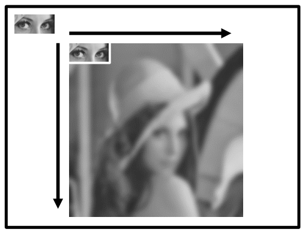
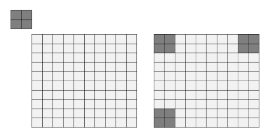
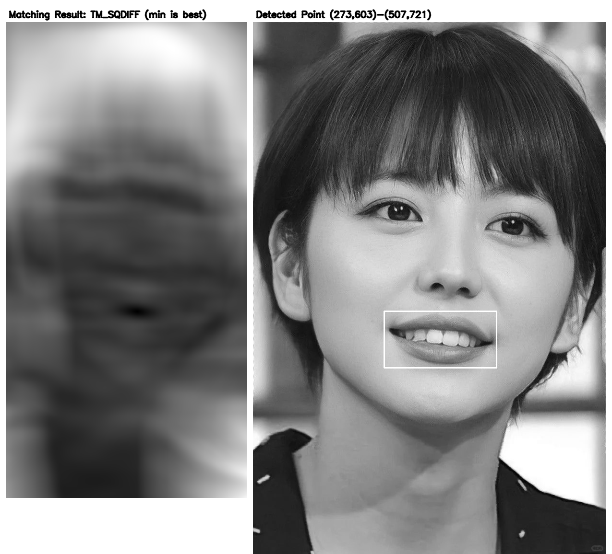
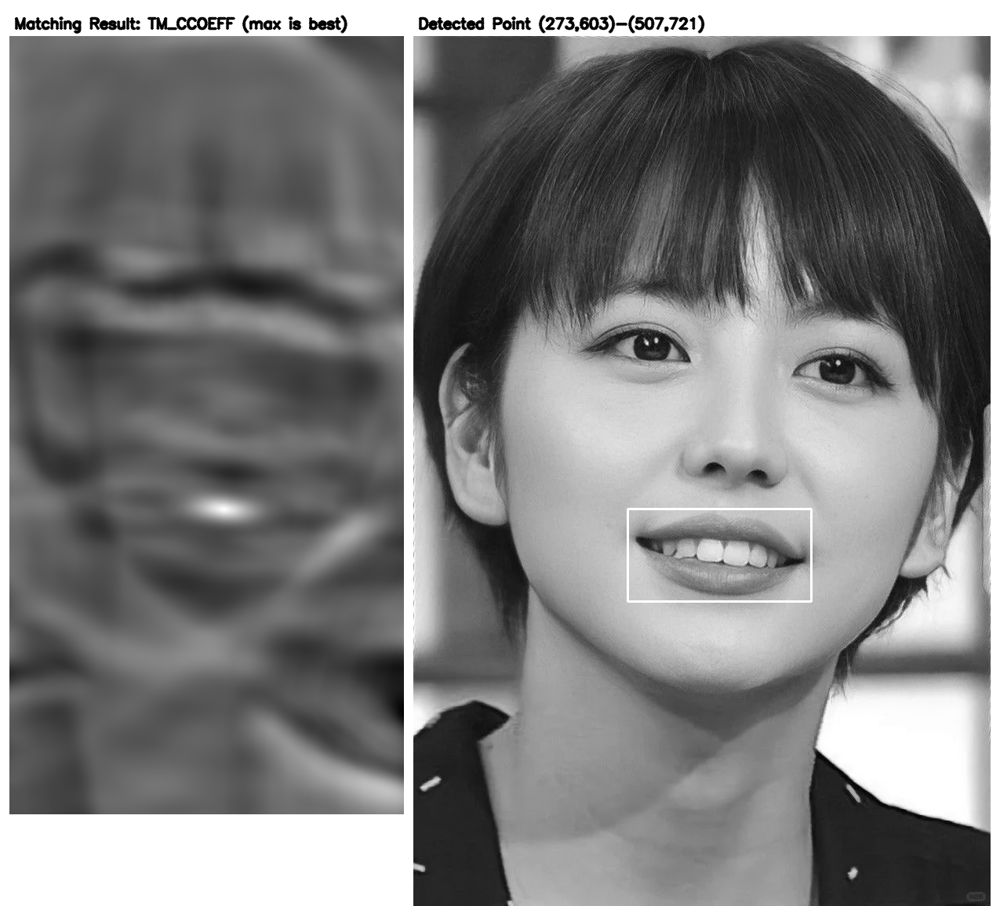
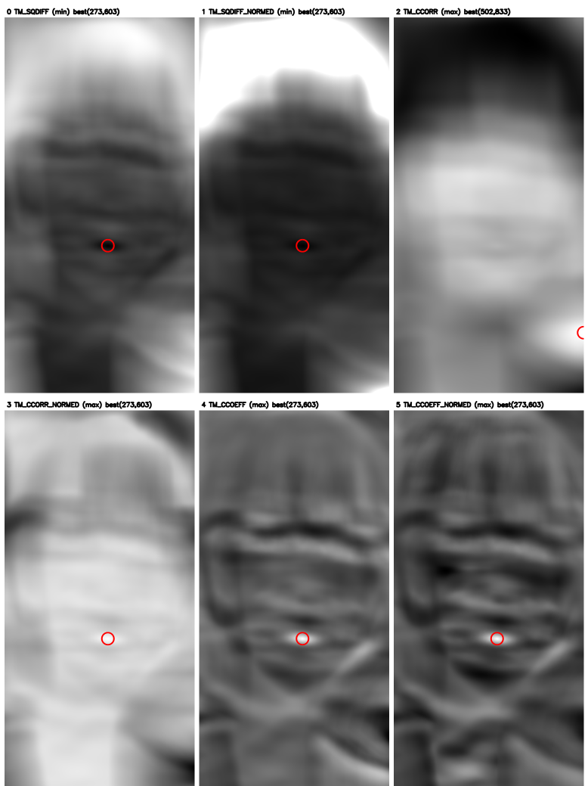
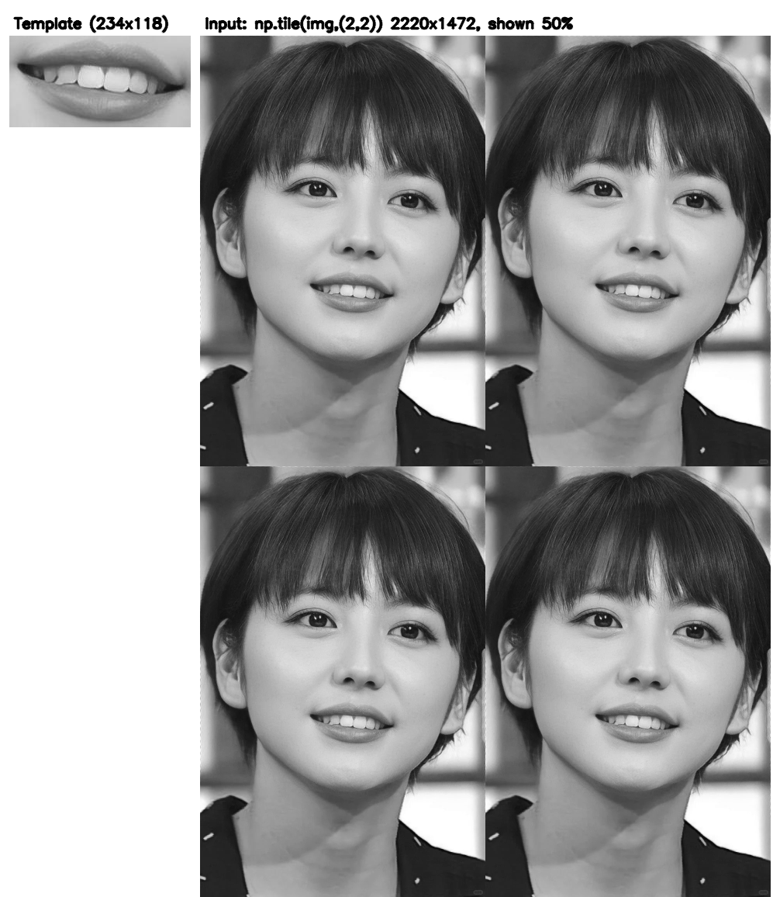
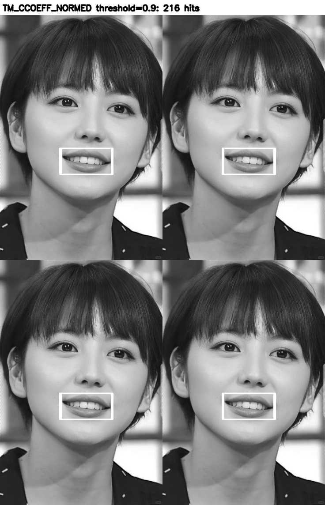
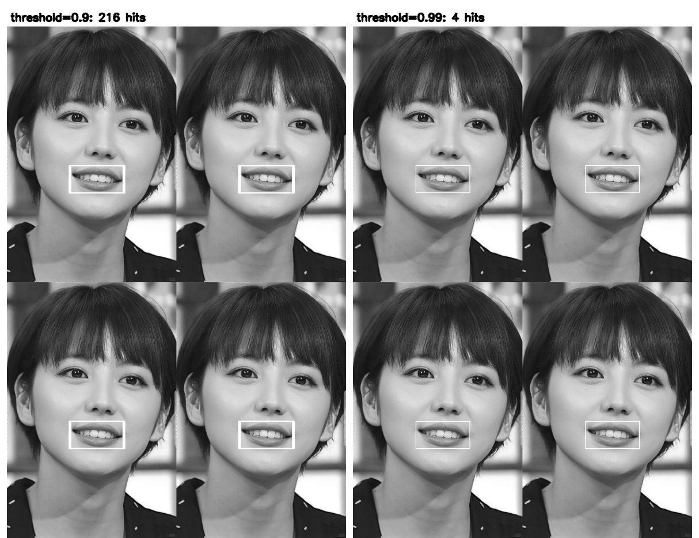

第 15 章 模板匹配#
本章解决：在一幅大图里找一块已知小图的位置——模板匹配（template matching）。做法是滑动窗口：把模板图像在输入图像上逐像素滑动，每到一个位置就用一种相似度度量给"模板与它盖住的这块区域"打一个分，全部位置打完就得到一张匹配分数地图。分数地图上最暗处（平方差类方法）或最亮处（相关类方法）就是模板所在的位置；给分数地图设阈值再逐个画框，还能把出现多次的目标一网打尽。
运行环境约定
原书本章素材 lena512g.bmp、temp.bmp（lena 眼部子图）、lena4.bmp、lena4Temp.bmp 不在素材目录中。本章统一换用素材目录里的图片顶替：picture3.jpg（736×1110 彩色图，代码中读为灰度图）顶替 lena512g.bmp / lena4.bmp，picture3_mouth.jpg（从 picture3 截出的嘴部子图，234×118）顶替 temp.bmp / lena4Temp.bmp。多模板匹配按原书"输入图像由 4 幅相同图像构成"的思路，在代码里用 np.tile 把 picture3 平铺成 2×2 再匹配，代码结构与原书保持一致。所有控制台输出均为 OpenCV 4.13 + NumPy 2.2 + Matplotlib 3.10 环境实测；例题的运行结果插图（图 15.3~图 15.7、图 15.30、图 15.31）为同一环境实跑代码生成。
15.0 本章导图#
15.1 模板匹配基础#
模板匹配是指在当前图像 A 内寻找与图像 B 最相似的部分。一般将图像 A 称为输入图像（input image），将图像 B 称为模板图像（template image）。模板匹配的操作方法是将模板图像 B 在图像 A 上滑动，遍历所有像素以完成匹配。

比如想在 lena 大图内找到左上角那块"眼睛"小图：大图是输入图像，眼睛小图是模板图像。查找的方式是，将模板图像在输入图像内从左上角开始滑动，逐个像素遍历整幅输入图像，以查找与其最匹配的部分。
cv2.matchTemplate 函数#
在 OpenCV 内，模板匹配使用函数 cv2.matchTemplate() 实现，语法格式：
| 参数 | 含义 |
|---|---|
| image | 原始图像（输入图像），必须是 8 位或者 32 位的浮点型图像 |
| templ | 模板图像。尺寸必须小于或等于原始图像，并且与原始图像具有同样的类型 |
| method | 匹配方法，通过 TemplateMatchModes 实现，有 6 种可能的值，见表 15-1 |
| mask | 模板图像掩模。必须和模板图像 templ 具有相同的类型和大小，通常使用默认值 |
表 15-1 method 的取值以及含义
| 参数值 | 对应数值 | 说明 | 最佳匹配位置 |
|---|---|---|---|
| cv2.TM_SQDIFF | 0 | 以方差为依据进行匹配。完全匹配则结果为零，不匹配则得到很大的值 | 最小值处 |
| cv2.TM_SQDIFF_NORMED | 1 | 标准（归一化）平方差匹配 | 最小值处 |
| cv2.TM_CCORR | 2 | 相关匹配：模板与输入对应位置相乘，乘积较大表示匹配程度较高，乘积为 0 表示匹配效果最差 | 最大值处 |
| cv2.TM_CCORR_NORMED | 3 | 标准（归一化）相关匹配 | 最大值处 |
| cv2.TM_CCOEFF | 4 | 相关系数匹配：1 表示完美匹配，-1 表示糟糕的匹配，0 表示没有任何相关性（随机序列） | 最大值处 |
| cv2.TM_CCOEFF_NORMED | 5 | 标准（归一化）相关系数匹配 | 最大值处 |
原书笔误：TM_CCOEFF 的取值范围说法
表 15-1 里"1 表示完美匹配、-1 表示糟糕的匹配、0 表示没有相关性"这组值域，只对归一化版本 TM_CCOEFF_NORMED 严格成立。TM_CCOEFF 是未归一化的相关系数，分数没有固定范围。实测（picture3.jpg + picture3_mouth.jpg，TM_CCOEFF）：minVal = −28172656，maxVal = 46961540，远超 \([-1, 1]\)；同一数据换 TM_CCOEFF_NORMED，minVal = −0.4438、maxVal = 0.9917，落在 \([-1, 1]\) 内。
六种方法对应的计算公式（I 表示输入图像，T 表示模板，R 表示输出的结果图像，x 和 y 表示位置信息，w、h 为模板的宽和高）：
cv2.TM_SQDIFF
cv2.TM_SQDIFF_NORMED
cv2.TM_CCORR
cv2.TM_CCORR_NORMED
cv2.TM_CCOEFF
其中 \(T'(x', y') = T(x', y') - \frac{1}{w \cdot h} \sum_{x'', y''} T(x'', y'')\)，\(I'(x + x', y + y') = I(x + x', y + y') - \frac{1}{w \cdot h} \sum_{x'', y''} I(x + x'', y + y'')\)。也就是先把模板、窗口都减去各自的均值，再算相关——去掉亮度整体偏移的影响。
cv2.TM_CCOEFF_NORMED
拓展：为什么要归一化
未归一化的 TM_CCORR 只做乘积累加，谁亮谁的分数就高：把模板挪到一片白色亮区，分数反而比真实位置还高。构造一幅背景灰度 10 的图，把随机模板贴在第 80 行 180 列，再在别处放一块全白 255 的亮块，实测：TM_CCORR 的最大值落在亮块 (30, 20) 处，完全找错；TM_CCORR_NORMED 的最大值 1.000 精确落在模板真实位置 (180, 80)。归一化相当于"先除掉各自的能量"，让不同位置的分数可比。实际项目中筛选匹配结果，优先用 _NORMED 系列。
返回值 result 与结果尺寸#
函数 cv2.matchTemplate() 的返回值 result 是由每个位置的比较结果组合构成的一个结果集，类型是单通道 32 位浮点型。如果输入图像尺寸是 W×H，模板的尺寸是 w×h，则返回值的大小为 (W−w+1)×(H−h+1)。
为什么是这个尺寸？模板在原始图像内遍历时，水平方向：
- 遍历的起始坐标是原始图像左数第 1 个像素；
- 最后一次比较是当模板图像位于原始图像的最右侧时，此时其左上角像素所在的位置是第 W−w+1 个。
所以返回值 result 在水平方向上的大小是 W−w+1，即水平方向上的比较次数。垂直方向同理，从顶端第 1 个像素开始，到模板位于最下端为止，比较次数是 H−h+1。模板图像要在输入图像内比较 (W−w+1)×(H−h+1) 次，这些比较结果构成一个同尺寸的二维数组。

以图 15.2 为例：左上方的 2×2 小方块是模板图像，右下方的 10×10 图像是输入图像。模板向右移动时最远只能贴到输入图像右边界，此时模板左上角对应输入图像的第 9 列（10−2+1=9）；向下同理最远到第 9 行。所以 result 是 9×9 的二维数组，总计比较 81 次。
在 numpy 里，数组的形状是"先行后列"，所以 result 的 shape 是 (H−h+1, W−w+1)——行数在前。实测 picture3.jpg（1110 行 736 列）配 picture3_mouth.jpg（118 行 234 列）：res.shape = (993, 503)，正是 (1110−118+1, 736−234+1)。
方法不同，result 的含义也不同：
- method 为 cv2.TM_SQDIFF 和 cv2.TM_SQDIFF_NORMED 时，result 值为 0 表示匹配度最好，值越大表示匹配度越差；
- method 为 cv2.TM_CCORR、cv2.TM_CCORR_NORMED、cv2.TM_CCOEFF 和 cv2.TM_CCOEFF_NORMED 时，result 的值越小表示匹配度越差，值越大表示匹配度越好。
拓展：彩色图也能匹配
image 与 templ 都是 3 通道彩色图时，matchTemplate 同样可用：公式里的求和会跨所有通道累计（均值也按全部通道计算），返回值仍是单通道 32 位浮点。实测彩色 picture3.jpg 配彩色 picture3_mouth.jpg，TM_CCOEFF_NORMED 的最大值 0.9908 落在 (273, 603)，与灰度匹配结果一致。
六种方法位置对照（动手验证）#
构造一幅已知大图，从其中裁出一块模板，六种方法的最佳位置必须一致且指回裁剪处——这是检验理解是否到位的最直接实验。
# ===== 15.1 动手验证：已知图 + 从其中裁出的模板，六种方法位置对照 =====
import cv2
import numpy as np
rng = np.random.RandomState(42)
big = rng.randint(0, 256, (300, 400)).astype(np.uint8) # 300 行 400 列的已知大图
templ = big[87:147, 123:203].copy() # 从第 87 行 123 列裁出 60 行 80 列模板
methods = [ # (方法, 判定方向)：平方差类取 min，其余取 max
(cv2.TM_SQDIFF, 'min'),
(cv2.TM_SQDIFF_NORMED, 'min'),
(cv2.TM_CCORR, 'max'),
(cv2.TM_CCORR_NORMED, 'max'),
(cv2.TM_CCOEFF, 'max'),
(cv2.TM_CCOEFF_NORMED, 'max'),
]
for m, mode in methods: # 逐个方法试验
res = cv2.matchTemplate(big, templ, m) # 模板匹配
minVal, maxVal, minLoc, maxLoc = cv2.minMaxLoc(res) # 找最值及位置
best = minLoc if mode == 'min' else maxLoc # 按方向取最佳位置
print(m, 'res.shape=', res.shape, '最佳位置=', best) # m 打印出来是方法的枚举数值
输出：
0 res.shape= (241, 321) 最佳位置= (123, 87)
1 res.shape= (241, 321) 最佳位置= (123, 87)
2 res.shape= (241, 321) 最佳位置= (123, 87)
3 res.shape= (241, 321) 最佳位置= (123, 87)
4 res.shape= (241, 321) 最佳位置= (123, 87)
5 res.shape= (241, 321) 最佳位置= (123, 87)
三件事得到验证：result 的形状 (241, 321) 正是 (300−60+1, 400−80+1)；六种方法虽分数含义不同，最佳位置全部是 (123, 87)，即模板被裁出的位置；打印出来的方法数值 0~5 与表 15-1 的"对应数值"一列一致。
cv2.minMaxLoc 查找最值与位置#
查找最值（极值）与最值所在的位置，使用 cv2.minMaxLoc() 函数，语法格式：
| 参数/返回值 | 含义 |
|---|---|
| src | 单通道数组 |
| mask | 用来选取掩模的子集，可选项 |
| minVal | 返回的最小值，如果没有最小值，则可以是 NULL（空值） |
| maxVal | 返回的最大值，如果没有最大值，则可以是 NULL |
| minLoc | 最小值的位置，如果没有最小值，则可以是 NULL |
| maxLoc | 最大值的位置，如果没有最大值，则可以是 NULL |
原书笔误：minMaxLoc 的参数说明
原书把 minLoc 写成"最大值的位置"、把 maxVal 的条件写成"如果没有最小值"，属于复制粘贴错误。正确含义是：minVal、minLoc 对应最小值及其位置，maxVal、maxLoc 对应最大值及其位置。minMaxLoc 的详细说明与实例见第 12 章。
cv2.matchTemplate() 返回值中的最值位置就是模板匹配的位置。选用不同的 method，匹配位置可能位于最大值处，也可能位于最小值处。当 method 为 cv2.TM_SQDIFF 和 cv2.TM_SQDIFF_NORMED 时，0 表示最佳匹配，要找最小值所在的位置：
minVal, maxVal, minLoc, maxLoc = cv2.minMaxLoc(rv) # rv 是 matchTemplate 的返回值
topLeft = minLoc # 查找最小值所在的位置
bottomRight = (topLeft[0] + w, topLeft[1] + h) # w、h 是模板图像的宽度和高度
当 method 为 cv2.TM_CCORR、cv2.TM_CCORR_NORMED、cv2.TM_CCOEFF 和 cv2.TM_CCOEFF_NORMED 时，返回值越大匹配度越好，要找最大值所在的位置：
minVal, maxVal, minLoc, maxLoc = cv2.minMaxLoc(rv)
topLeft = maxLoc # 查找最大值所在的位置
bottomRight = (topLeft[0] + w, topLeft[1] + h)
注意 minMaxLoc 返回的位置本身就是 (列, 行) 即 (x, y) 顺序，所以 topLeft[0] 加宽、topLeft[1] 加高，得到右下角坐标。
cv2.rectangle 标记匹配位置#
确定了模板匹配的矩形对角坐标后，用 cv2.rectangle() 将该位置标记出来，语法格式：
| 参数 | 含义 |
|---|---|
| img | 要标记的目标图像 |
| pt1 | 矩形的一个顶点 |
| pt2 | pt1 的对角顶点 |
| color | 要绘制矩形的颜色或灰度级（灰度图像） |
| thickness | 矩形边线的宽度 |
标记语句：
在灰度图里颜色用 255 表示白色；线宽 2 表示边线画 2 个像素宽。
【例 15.1】TM_SQDIFF：找最小值#
使用 cv2.matchTemplate() 进行模板匹配，method 设为 cv2.TM_SQDIFF，显示函数的返回结果及匹配结果。
# ===== 15.1 例 15.1：TM_SQDIFF 模板匹配（原书 lena512g.bmp + temp.bmp → picture3.jpg + picture3_mouth.jpg） =====
import cv2
import numpy as np
from matplotlib import pyplot as plt
img = cv2.imread('picture3.jpg', 0) # 输入图像，flags=0 读成灰度图
template = cv2.imread('picture3_mouth.jpg', 0) # 模板图像：从输入图中截出的嘴部子图
th, tw = template.shape[::] # shape 正序取：th 是高，tw 是宽
rv = cv2.matchTemplate(img, template, cv2.TM_SQDIFF) # 平方差匹配：值越小越匹配
minVal, maxVal, minLoc, maxLoc = cv2.minMaxLoc(rv) # 找最值及位置
topLeft = minLoc # SQDIFF 取最小值位置为左上角
bottomRight = (topLeft[0] + tw, topLeft[1] + th) # 左上角加模板宽高得右下角
cv2.rectangle(img, topLeft, bottomRight, 255, 2) # 白色矩形圈出匹配区域
plt.subplot(121), plt.imshow(rv, cmap='gray') # 左图：匹配分数地图
plt.title('Matching Result'), plt.xticks([]), plt.yticks([])
plt.subplot(122), plt.imshow(img, cmap='gray') # 右图：标记后的输入图像
plt.title('Detected Point'), plt.xticks([]), plt.yticks([])
plt.show()
运行结果实测：rv.shape = (993, 503)，minVal = 805696.0，topLeft = (273, 603)，bottomRight = (507, 721)。左图分数地图中最暗的一点就是最佳匹配位置；右图中嘴部被白色矩形圈出。

shape[::] 与 shape[::-1]#
计算模板宽度、高度时，例 15.1 使用 th, tw = template.shape[::]，返回值中 th 是模板图像的高度、tw 是宽度。OpenCV 官网示例常用 tw, th = template.shape[::-1]，把宽度和高度的顺序调换。用一个 3 行 6 列的小数组看清楚两者的区别：
# ===== 15.1 shape[::] 与 shape[::-1]：正序先高后宽，倒序先宽后高 =====
import numpy as np
list2d = np.arange(18).reshape(3, 6) # 3 行 6 列数组，相当于高 3、宽 6 的"模板"
print(list2d)
h, w = list2d.shape[::] # 正序取 shape：第 1 个是高度，第 2 个是宽度
print(h, w)
w, h = list2d.shape[::-1] # 倒序取 shape：第 1 个是宽度，第 2 个是高度
print(w, h)
输出：
数组形状永远是 (高, 宽)（行在前）。shape[::] 原样给出高、宽；shape[::-1] 把两个维度倒过来，先宽后高。两种写法都行，关键是变量顺序要跟写法配套——配错了，矩形就画偏。
【例 15.2】TM_CCOEFF：找最大值#
method 改为 cv2.TM_CCOEFF，此时要找最大值所在的位置。
# ===== 15.1 例 15.2：TM_CCOEFF 模板匹配（原书 lena512g.bmp + temp.bmp → picture3.jpg + picture3_mouth.jpg） =====
import cv2
import numpy as np
from matplotlib import pyplot as plt
img = cv2.imread('picture3.jpg', 0) # 输入图像，灰度
template = cv2.imread('picture3_mouth.jpg', 0) # 模板图像
tw, th = template.shape[::-1] # 倒序取：tw 是宽，th 是高
rv = cv2.matchTemplate(img, template, cv2.TM_CCOEFF) # 相关系数匹配：值越大越匹配
minVal, maxVal, minLoc, maxLoc = cv2.minMaxLoc(rv)
topLeft = maxLoc # CCOEFF 取最大值位置为左上角
bottomRight = (topLeft[0] + tw, topLeft[1] + th)
cv2.rectangle(img, topLeft, bottomRight, 255, 2)
plt.subplot(121), plt.imshow(rv, cmap='gray')
plt.title('Matching Result'), plt.xticks([]), plt.yticks([])
plt.subplot(122), plt.imshow(img, cmap='gray')
plt.title('Detected Point'), plt.xticks([]), plt.yticks([])
plt.show()
实测 maxVal = 46961540.0，topLeft = (273, 603)，与例 15.1 圈出的是同一块区域。

两个例子用的是同样的输入图像和模板图像，差别只在 method 及其对应的查找方向：例 15.1 的 cv2.TM_SQDIFF 查找最小值所在的位置；例 15.2 的 cv2.TM_CCOEFF 查找最大值所在的位置。查找最佳匹配前，先确定用的是什么 method，再确定找最大值还是最小值。

图 15.30 把六种方法的分数地图放到同一组素材下对比：TM_SQDIFF、TM_SQDIFF_NORMED、TM_CCORR_NORMED、TM_CCOEFF、TM_CCOEFF_NORMED 的最佳位置全部落在嘴部 (273, 603)；唯独未归一化的 TM_CCORR 把最大值打在了右侧一片亮区 (502, 833)——谁亮谁的乘积累加就大，印证了前文"未归一化会被亮度带偏"的说法。实际项目筛选匹配结果，优先用 _NORMED 系列。
15.2 多模板匹配#
前面的例子在输入图像内搜索的子图只出现了一次。有些情况下，要搜索的模板图像很可能在输入图像内出现多次，这时需要找出多个匹配结果。而 cv2.minMaxLoc() 仅仅能够找出最值，无法给出所有匹配区域的位置信息。要匹配多个结果，需要利用阈值（threshold）进行处理，分五步完成。
1. 获取匹配位置的集合：np.where#
函数 np.where() 能获取满足条件的位置集合。输入是一维数组时，返回一组索引数组；输入是二维数组时，返回两组索引数组（行索引组、列索引组）。
# ===== 15.2 np.where：一维数组，找大于 5 的元素索引 =====
import numpy as np
a = np.array([3, 6, 8, 1, 2, 88])
b = np.where(a > 5) # 条件：元素值大于 5（索引从 0 开始）
print(b)
输出：
索引 1、2、5 上的元素（6、8、88）大于 5。二维数组时返回两组索引：
# ===== 15.2 np.where：二维数组，返回行、列两组索引，再用 zip 逐个取出 =====
import numpy as np
am = np.array([[3, 6, 8, 77, 66], [1, 2, 88, 3, 98], [11, 2, 67, 5, 2]])
b = np.where(am > 5)
print(b)
for i in zip(*b): # 逐个取出 (行号, 列号)
print(i)
输出：
(array([0, 0, 0, 0, 1, 1, 2, 2], dtype=int64), array([1, 2, 3, 4, 2, 4, 0, 2], dtype=int64))
(0, 1)
(0, 2)
(0, 3)
(0, 4)
(1, 2)
(1, 4)
(2, 0)
(2, 2)
套到模板匹配上，就是找出返回值 res 中所有不小于阈值的位置：
返回值 loc 的两个元素分别是匹配值的行索引集合和列索引集合。
2. 用循环处理多个位置#
要处理多个值，通常需要循环：
输出：
获取匹配值的索引集合后，就能遍历所有匹配的位置并逐个标记。
3. 在循环中使用 zip(*loc)#
np.where() 返回的是"行索引组、列索引组"两个独立数组，循环前要把它们按位配对。函数 zip() 将可迭代对象中对应的元素打包成一个个元组：
# ===== 15.2 zip(*t)：把三个列表按位打包 =====
x = [1, 2, 3]
y = [4, 5, 6]
z = [7, 8, 9]
t = (x, y, z) # 元组里装三个列表
print(t)
for i in zip(*t): # *t 解包成三个参数，zip 按位打包
print(i)
输出：
于是遍历模板匹配索引集合的语句为 for i in zip(*模板匹配索引集合)，每次循环得到的 i 就是一个 (行号, 列号) 元组。
4. 调整坐标：行列互换#
np.where() 返回的位置形式是 (行号, 列号)；而 cv2.rectangle() 的顶点参数用的是 (列号, 行号) 形式。画矩形前要做"行列互换"，一条倒序切片即可：
# ===== 15.2 loc[::-1]：把 (行, 列) 交换成 (列, 行) =====
import numpy as np
loc = ([1, 2, 3, 4], [11, 12, 13, 14]) # 模拟 where 的返回：行索引组在前
print(loc)
print(loc[::-1]) # 倒序：列索引组换到前面
输出：
所以遍历语句写作 for pt in zip(*loc[::-1])：先 loc[::-1] 换成列在前，再 zip 配对，每次得到的 pt 就是 rectangle 需要的 (列, 行) 顶点。
原书笔误：小节编号重复
原书 15.2 节的步骤编号有两个"4."——"4. 调整坐标"之后又出现"4. 标记匹配图像的位置"。后者应为"5."，本笔记按 5 步组织。
5. 标记匹配位置#
对每个命中位置 pt，以 pt 为左上角、pt 加模板宽高为右下角画矩形：
【例 15.3】多目标匹配#
使用模板匹配方式，标记输入图像内与模板图像匹配的多个子图像。原书输入图像 lena4.bmp 由 4 幅 lena 图像构成；本章用 np.tile 把 picture3 平铺成 2×2，构造同样的场景。
# ===== 15.2 例 15.3：多模板匹配（原书 lena4.bmp + lena4Temp.bmp → 平铺 2×2 的 picture3.jpg + picture3_mouth.jpg） =====
import cv2
import numpy as np
from matplotlib import pyplot as plt
img = cv2.imread('picture3.jpg', 0) # 灰度读入
img = np.tile(img, (2, 2)) # 行、列各重复一次：4 个相同子图，模拟 lena4
template = cv2.imread('picture3_mouth.jpg', 0) # 模板图像
w, h = template.shape[::-1] # 倒序取 shape：先宽后高
res = cv2.matchTemplate(img, template, cv2.TM_CCOEFF_NORMED) # 归一化相关系数：越大越好
threshold = 0.9 # 阈值：分数不低于 0.9 的都算命中
loc = np.where(res >= threshold) # 命中位置的 (行索引组, 列索引组)
for pt in zip(*loc[::-1]): # 行列互换后逐个取出 (列, 行)
cv2.rectangle(img, pt, (pt[0] + w, pt[1] + h), 255, 1) # 每个命中点画一个矩形
plt.imshow(img, cmap='gray') # 显示标记结果
plt.xticks([]), plt.yticks([])
plt.show()


实测（平铺 2×2 后的 picture3，总尺寸 2220×1472，结果集 2103×1239）：阈值 0.9 时 np.where 命中 216 个位置，聚集在 4 个目标附近——左上 (268, 601)、右上 (1004, 601)、左下 (268, 1711)、右下 (1004, 1711) 各一个目标，全部被圈出。
本来的设定是矩形边界宽度为 1，但标记出来的宽度远大于 1。这是因为当前区域内存在多个大于阈值 0.9 的位置，每一个位置都画了一个宽度为 1 的矩形，多个矩形合在一起，边界就显得很粗。调整阈值可以改变效果。图 15.31 把阈值 0.9 与 0.99 的标记效果放在一张图里对比，粗细差别一目了然。

拓展：阈值调多高合适
阈值越低，命中点越多、框越粗；阈值越高，命中点越少。实测同一组素材：threshold = 0.9 命中 216 个点、聚成 4 簇；threshold 提到 0.99 后恰好剩 4 个点，精确落在 4 个目标上。经验做法是从 0.9 起试，宁可命中多也不漏检，再用更高阈值收窄。目标有轻微形变或光照变化时，把目标"挤"成一两个点的做法会漏检，更稳妥的方式是保留各簇中分数最高的点——即非极大值抑制（Non-Maximum Suppression，NMS）的思路，OpenCV 没有现成函数，可用排序 + 重叠率判断实现。
拓展：mask 掩模怎么用
mask 与模板同类型、同大小，掩模中为 0 的位置不参与匹配计算，为非 0 的位置正常参与。原书（与 OpenCV 文档）声明该参数当前仅支持 TM_SQDIFF 和 TM_CCORR_NORMED；实测 OpenCV 4.13 中六种方法传入 mask 均不报错，但未归一化方法配掩模不可靠：全白掩模下 TM_CCORR 的最大值落在无关亮区 (502, 833)，而归一化方法都指向真实位置 (273, 603)。用法：
# ===== 15.1 拓展：带掩模的模板匹配（掩模置 0 的部分不参与比较） =====
import cv2
import numpy as np
img = cv2.imread('picture3.jpg', 0)
template = cv2.imread('picture3_mouth.jpg', 0)
h, w = template.shape
mask = np.full((h, w), 255, dtype=np.uint8) # 全 255：先让所有像素参与比较
mask[:, :w // 3] = 0 # 左侧 1/3 置 0：这部分不参与比较
res = cv2.matchTemplate(img, template, cv2.TM_CCORR_NORMED, mask=mask)
minVal, maxVal, minLoc, maxLoc = cv2.minMaxLoc(res)
print(maxLoc, maxVal) # 实测 (273, 603) 0.9994
拓展：模板匹配的适用边界
模板匹配只对平移稳健：模板一旦被缩放、旋转，逐像素对应关系被破坏，分数骤降，匹配即失效。目标尺寸未知时，常规做法是配合图像金字塔（第 11 章）做多尺度搜索。另外匹配的计算量与"位置数 × 模板像素数"成正比，大图配大模板会很慢，OpenCV 内部对相关类方法用离散傅里叶变换（第 14 章）加速。
坑与陷阱#
7 个容易踩的坑
- 最值方向搞反：TM_SQDIFF、TM_SQDIFF_NORMED 是"越小越好"，取 minLoc；其余四种"越大越好"，取 maxLoc。方向取反，矩形就画到分数地图的"最差位置"上。
- 行列顺序两个方向：
minMaxLoc返回的位置是 (列, 行)；np.where返回的是 (行索引组, 列索引组)，画矩形前必须loc[::-1]互换。两处顺序约定不同，是本章最容易出错的地方。 - shape 的维度顺序：
template.shape永远是 (高, 宽)。th, tw = template.shape[::]与tw, th = template.shape[::-1]都正确，但变量顺序必须跟写法配套；写反了 bottomRight 就错位。 - result 的 shape 是 (H−h+1, W−w+1)：numpy 先行后列。原书写作 (W−w+1)×(H−h+1) 是"宽×高"的几何语序，打印
res.shape时别按 (W−w+1, H−h+1) 去对数。 - 模板必须不大于输入图且类型一致：templ 比 image 还大，或一个 uint8 一个 float32，都会直接抛异常。模板从原图裁出时记得
.copy()，避免拿着视图做匹配。 - 未归一化方法不能配固定阈值：TM_CCORR、TM_CCOEFF 的分数范围随图像亮度、尺寸浮动（实测 CCOEFF 达 4.7×10⁷），
res >= 0.9这种筛选只对_NORMED系列直观。多目标匹配请用 TM_CCOEFF_NORMED 或 TM_SQDIFF_NORMED。 - 多目标框叠成粗边：一个目标邻域内常有几十上百个超阈值点，每个点画一个矩形，看起来像线宽设错了。这不是 bug；要么提高阈值，要么做非极大值抑制，每簇只留一个点。
速览#
- 模板匹配 = 在输入图像内滑动模板图像，逐位置算相似度；
cv2.matchTemplate(image, templ, method[, mask])一次完成。 - 返回单通道 32 位浮点结果集，几何尺寸 (W−w+1)×(H−h+1)；numpy 的
res.shape是 (H−h+1, W−w+1)，行在前。 - 六种 method：TM_SQDIFF、TM_SQDIFF_NORMED 越小越好（0 最佳），TM_CCORR、TM_CCORR_NORMED、TM_CCOEFF、TM_CCOEFF_NORMED 越大越好。
- 归一化（
_NORMED）方法分数范围稳定（相关系数类在 \([-1, 1]\)），抗亮度干扰，多目标阈值筛选必用。 cv2.minMaxLoc(src)一次返回 minVal、maxVal、minLoc、maxLoc；位置为 (列, 行)。- 定位三行式：
topLeft = minLoc 或 maxLoc→bottomRight = (topLeft[0] + w, topLeft[1] + h)→cv2.rectangle(img, topLeft, bottomRight, 255, 2)。 shape[::]给 (高, 宽)，shape[::-1]调成 (宽, 高)，变量顺序必须配套。- mask 与 templ 同类型同大小，置 0 处不参与匹配；文档声明仅支持 TM_SQDIFF 与 TM_CCORR_NORMED（4.13 实测六种均不报错，但未归一化方法不可靠）。
- 多目标匹配五步：
np.where(res >= threshold)筛位置 → 循环 →zip(*loc[::-1])配对并换行列 → 逐个cv2.rectangle画框 → 调阈值控制命中数。 - 阈值越高命中越少：实测 0.9 命中 216 点聚 4 簇，0.99 恰好 4 点；抗形变需求用 NMS 思路收尾。
术语速查#
| 英文 / 函数 | 中文 | 一句话 |
|---|---|---|
| template matching | 模板匹配 | 在输入图像内寻找与模板图像最相似的部分 |
| input image | 输入图像 | 被搜索的大图，8 位或 32 位浮点型 |
| template image | 模板图像 | 要找的小图，尺寸不大于输入图、类型相同 |
| sliding window | 滑动窗口 | 模板逐像素滑动遍历输入图像的匹配方式 |
| cv2.matchTemplate | 模板匹配函数 | result = matchTemplate(image, templ, method[, mask]) |
| TemplateMatchModes | 匹配方法枚举 | method 参数的 6 种取值，对应数值 0~5 |
| TM_SQDIFF | 平方差匹配 | 对应 0，完全匹配为 0，取最小值位置 |
| TM_SQDIFF_NORMED | 归一化平方差匹配 | 对应 1，平方差除以能量项，取最小值位置 |
| TM_CCORR | 相关匹配 | 对应 2，模板与窗口乘积累加，取最大值位置 |
| TM_CCORR_NORMED | 归一化相关匹配 | 对应 3，乘积和除以能量平方根，取最大值位置 |
| TM_CCOEFF | 相关系数匹配 | 对应 4，先减均值再相关，取最大值位置 |
| TM_CCOEFF_NORMED | 归一化相关系数匹配 | 对应 5，值域 \([-1, 1]\)，1 为完美匹配，取最大值位置 |
| normalization | 归一化 | 除以能量项让分数可比，抗亮度干扰 |
| result | 匹配结果集 | 每个位置的分数组成单通道 32 位浮点"分数地图" |
| cv2.minMaxLoc | 最值查找函数 | 一次返回最小值/最大值及其 (列, 行) 位置 |
| minVal / maxVal | 最小值 / 最大值 | 结果集中最好与最差的分数 |
| minLoc / maxLoc | 最小值 / 最大值位置 | (列, 行) 形式，最佳匹配的左上角坐标 |
| topLeft / bottomRight | 左上角 / 右下角 | 匹配区域的对角顶点，后者由前者加模板宽高得到 |
| cv2.rectangle | 矩形绘制函数 | rectangle(img, pt1, pt2, color[, thickness])，圈出匹配区域 |
| thickness | 线宽 | 矩形边线的像素宽度 |
| mask | 掩模 | 与模板同类型同大小，置 0 处不参与匹配 |
| threshold | 阈值 | 多目标匹配的分数门槛，命中点都视为目标位置 |
| np.where | 条件索引函数 | 返回满足条件的行、列两组索引数组 |
| zip(*loc) | 按位打包 | 把行、列索引组配成 (列, 行) 元组，loc 需先 [::-1] 换序 |
| Non-Maximum Suppression（NMS） | 非极大值抑制 | 每个目标邻域只留分数最高的点，去除重叠框（本书未涉及） |